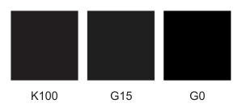

Черно-белая печать и цветокоррекция в X5
Интересуют настройки цветокоррекции или настройки печати для вывода документов на ч/б лазерных PCL-принтерах.
Большая часть моих черно-белых документов (реклама в газеты, листовки, бланки, формы, макеты печатей и штампов) созданы в предыдущих версиях корела в CMYK-модели.
Раньше любой черный (R0G0B0, C0M0Y0K100, C30M30Y30K100, G255) печатался на простом офисном принтере как 100% черный. Сейчас RGB черный и белый цвет выводится нормально, а все остальные - как серый (с растром). Переводить все документы в RGB совершенно не хочется. Нужно что-то делать в настройках. Но что?
При печати есть несколько опций, которые иногда дают нормальный результат. В настройках цвета есть вариант srgb XXXX Black Scaled. Есть настройки, где делать цветокоррекцию - в программе или на принтере, галочка Preserve RGB numbers, есть метод цветокоррекции и куча всяких опций, которые все равно не дают нужный результат. Я уже перепробовал штук 20 сочетаний, результат разный, но неудовлетворительный. Иногда черный становится нормальным, но зато белый цвет - светло-серым.
Можно, конечно, перекрасить объекты в файле, но поиск и замена цветовой модели не помогает. Нужно делать вручную или использовать макросы.
Проблема усугубляется тем, что в документе, как правило, объекты из разных цветовых моделей - может быть, макет в RGB, с картинкой в Grayscale и логотипом в CMYK или Panatone и импортированным из старого документа элементом в CMYK.
Если это полноцветный макет для типографии, то конечно, я обычно трачу время и перевожу все к одной цветовой модели. Но для мелких повседневных задач - это слишком затратно по времени. Например, открыл чужой PDF, добавил 2 слова и распечатал его. Или открыл старую листовку или бланк заявки, исправил год и отправил ее не печать на ризограф. Не хочется тратить время на перекрашивание объектов в таких мелочных ситуациях.
Проще вернуться на 12 корел.
Можете ли вы что-то посоветовать в данной ситуации?
Ключевым моментом в этом вопросе, если не касаться конкретных профилей, является правильно выбранный способ цветопередачи (Rendering intent). Необходимо установить Перцепционный. Этот способ цветопередачи сохраняет взаимосвязи между цветами, позволяя получить наилучшие результаты.
Разберёмся немного в сути вопроса. 100% чёрного в смик, никогда не был полностью чёрным цветом! Это легко заметно, если положить рядом две плашки. Одну K100, другую СМИК все по 100. Последний значительно чернее и визуально похож на чёрный RGB. Из этого, весьма логичным образом, следует, что К100 при преобразовании в Gray не должен давать G0!!!
Так вот, при правильно подобранном способе цветопередачи, К100 даёт G15. И это нормально! Как всё это выглядит, можно посмотреть на изображении ниже.

Для особо жаждущих получить K100 = G0, есть два пути, НО оба имеют свои серьёзные недостатки.
Первый довольно подробно изложен в справке по программе:
Тут конечно есть что добавить, но я воздержусь.
Второй — отключить управление цветом на время преобразования в оттенки серого.
П.С. Вот собственно и всё! Ни какой великой тайны или загадки тут нет. :)
Начнем с того, что режим Perceptual у меня стоит всегда.
Я знаю, что простой черный не самый черный на экране, но меня интересует принтер, а не экран. Хотя я не соглашусь с "никогда не был" - в старых версиях корела, может быть, в 10-й и более ранних C0M0Y0K100 на экране выглядел идентично C100M100Y100K100. В 12-й версии хотя на экране они и выглядели по-разному, но C0M0Y0K100 печатался на принтере именно черным (ровно как и R0G0B0).
Здесь http://pablomedok.at.tut.by/cdr.jpg - первый ряд - это Корел 12, второй и третий - X5. Буду еще экспериментировать
P.S. почему-то файл не прикрепляется - подвисает при закрузке на 35%
С принтером всё аналогично ибо CMS одна на всё!
у меня такая же проблема как у pablomedok. Когда стояла Х13 - черный выдавал как черный и заливку делал полностью - якрко выражанный черный, градация серого не происходила. Особенно это видно при печати на пленках, может на бумаге это вы не уведите ну на пленке отчетливо имеется существенная разница. На х15 версии черный дает как серый, т.е. черный выстреливает по пикселям (точками) и белый также заливает, т.е. получается не точный белый. Вся страница печатеться по пикселям. сколько настроить перепробовал все тоже самое. Перцепционную цветопередачу ставил но эффект не тот. Ребята как вышли из положения?
Если печатаете на принтерах где установлен PCL драйвер, то черный (К=100) будет серым, какой именно Sancho уже написал. Ставьте R=0, G=0, B=0 (для PCL).
Если у вас стоит CMS типа Europe General Purpose то черный на экране будет выглядеть серым, чтоб этого не было, включите Preserve pure black
правильно говорит Des425, в настройках цвета по умолчанию поставьте галку Preserve pure black (Сохранить чистый черный) и все должно стать путем.
за неимением принтера пробовал печатать на XPS принтер и получал тот же эффект что у автора топика. поставил галку - черный стал нормальным черным.
Ребята спасибо за ответы. Я извеняюсь может за тупой вопрос ? Где это функция : - Если у вас стоит CMS типа Europe General Purpose то черный на экране будет выглядеть серым, чтоб этого не было, включите Preserve pure black.
Эти изменения в кореле делать или настройках принтера. В настройках принтера такого нет...
это в настройках цвета по умолчанию
профили там вобще не причем, надо тока галку поставить Preserve pure black (Сохранить чистый черный)
после этого корел будет отображать все разновидности черного хорошим черным.
отдельный вопрос для чего они это сделали, может Санчо прояснит.
я так понимаю чтобы типа различать на глаз просто черный и богатый черный и регистэйшн, но почему такая петрушка уходит на печать? нет возможности проверить с 15 но подозреваю что это оттого что PCL принтер принимает в RGB а корел как раз в RGB и генерирует разный оттенок черного для разных черных если эта галка не стоит. с постскрипт-принтерами наверно такого эффекта не наблюдается. или тоже есть?
http://cdrpro.ru/news/2010-12-14-291
А где эти настройки находятся Preserve pure black (Сохранить чистый черный)?
Страницы